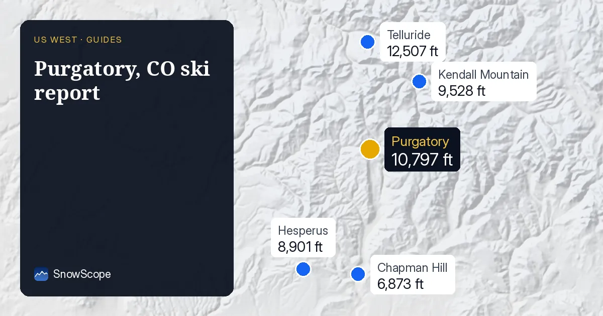
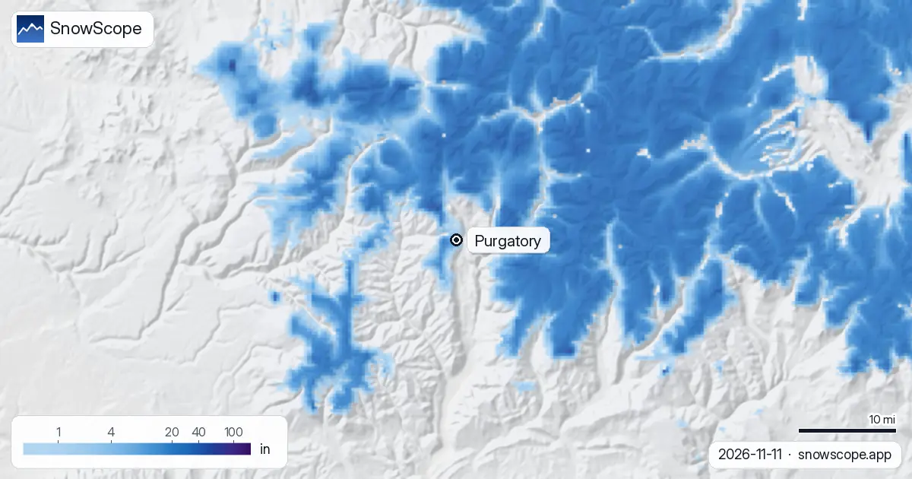
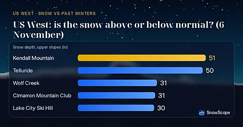

Purgatory, CO ski report: 3 in at the summit, 7 in on the way (12 November 2026)
Purgatory sits in the early-season waiting game: the summit at 10,800 ft (3,291 m) has 3 in (7 cm) of snow on the ground, but the base and mid-mountain are bare. The coming week brings the first real chance of buildup, with 7 in (17 cm) forecast for the summit by 19 November.
See the live snow forecast for Purgatory in the SnowScope appSnow depth, powder alerts and the 3D map, free.

What is on the mountain now
Only the summit holds snow on 12 November: 3 in (7 cm) from early-season dust. Mid-mountain at 9,800 ft (2,993 m) and the base at 8,800 ft (2,696 m) are both bare. The last seven days brought nothing to any height; conditions have been dry across the ski area.
These figures are the SnowScope map for the San Juan Mountains north of Durango, not the resort's own measurements. Early-season snow depth can vary by slope and wind, so thin cover like this may hide rocks in some areas.
The next week: when and where snow arrives
Between now and 19 November, SnowScope shows 7 in (17 cm) will fall at the summit, 6 in (15 cm) at mid-mountain and 4 in (10 cm) at the base. The snow will come gradually rather than in one big storm; the forecast does not show a sharp burst. Height matters: the summit will gain snow that the base may not.
The official Colorado forecasts and other sources should confirm the timing and amounts before you travel.
November across 46 past winters
November is Purgatory's warm-up month. In a middle winter, the summit usually sees 13 in (34 cm), mid-mountain 9 in (24 cm) and the base only 5 in (13 cm). One November in ten brings as little as 1 in (2 cm) at the summit; another brings 47 in (119 cm). First snow typically reaches the summit by 8 October, mid-mountain by 14 October and the base by 27 October.
December shifts the balance. By a middle winter the summit has 34 in (87 cm), mid-mountain 26 in (66 cm) and the base 16 in (41 cm). March is the deepest month, with the summit averaging 71 in (181 cm). Over the full season, the peak of a middle winter is 48 in (122 cm) at the base, 68 in (173 cm) at mid-mountain and 81 in (206 cm) at the summit.
The long view: how this winter trend compares
Last winter (2025-26) fell well short. The summit peaked at 32 in (82 cm), mid-mountain at 25 in (64 cm) and the base at 16 in (41 cm). Snow days at the summit totalled 168 against a normal 239. Purgatory has seen thinner peaks in recent decades: the median peak at the summit was 107 in (272 cm) in the first 15 of our 46 winters, but only 80 in (204 cm) in the last 15.
The best week for snow at Purgatory falls around late December. At the summit, 9 of 10 past winters held at least 20 in (50 cm) by the final week of December. At the base, good snow (20 in / 50 cm or more) arrives less often in early season; it is more reliable from January onward.

Reading the terrain
Purgatory spans about 2,000 ft (595 m) of vertical over 42 mi (68 km) of runs and 14 lifts. The summit line controls what you can ski in early season: when only the top holds snow, the base and mid-mountain may still be closed or bare. Watch the summit forecast to know when to expect lift openings.
Thin snow in November often sits on top of rock or bare ground. Stick to groomed runs until snow depth gives a safe buffer. The steeper terrain higher up will open later and may hold better coverage once storms accumulate.
Tips for skiers
- Watch the summit number on the forecast, not just the base: the top of the mountain decides early-season lift status at Purgatory.
- Early snow is thin—rocks hide under 3-4 in (8-10 cm) of cover. Ski groomed terrain until depth reaches 20 in (50 cm) or more.
- Check back after each update.
- The base and mid-mountain will likely stay bare for a few more weeks. Plan a Purgatory trip once December arrives and the base catches up.
- Before going off-piste around Durango, read the latest Colorado Avalanche Information Center bulletin at avalanche.state.co.us.
About these numbers
Resort snow depths are the deepest snow on the resort's upper slopes on the date shown; they are estimates for an area, not a measurement at one point. Forecasts can change. Always read the official avalanche bulletin before going off-piste.
Official avalanche bulletins: Colorado Avalanche Information Center
Cite this report
For research, teaching or the press: the numbers and charts are free to reuse under CC BY 4.0 with this citation.
SnowScope (2026), Purgatory, CO ski report: 3 in at the summit, 7 in on the way (12 November 2026), https://snowscope.app/blog/en/2026/11/purgatory-co-ski-report-12-november-2026.html, accessed 2026-11-12
SnowScope (Atlas Labs). (2026, November 12). Purgatory, CO ski report: 3 in at the summit, 7 in on the way (12 November 2026). SnowScope snow reports. https://snowscope.app/blog/en/2026/11/purgatory-co-ski-report-12-november-2026.html
BibTeX
@misc{snowscope2026purgatorycoskireport12no,
author = {{SnowScope (Atlas Labs)}},
title = {Purgatory, CO ski report: 3 in at the summit, 7 in on the way (12 November 2026)},
year = {2026},
month = nov,
howpublished = {\url{https://snowscope.app/blog/en/2026/11/purgatory-co-ski-report-12-november-2026.html}},
note = {Published 2026-11-12 14:19 UTC; accessed 2026-11-12}
}· CC BY 4.0 · Methods, data and tools →
Purgatory: snow and temperature by height, this winter vs last (tools) →
Follow Purgatory
Free: a message when fresh snow is coming, and the forecast every morning.
More snow reports

Kendall Mountain has the deepest snow in the US West at 50 in (127 cm) upper slopes. Snow covers 74,363 sq mi across the region on 7 November.

On 6 November, 3 of 5 major resorts in the US West have snow deeper than the average for this date in the past 46 winters.

Seasonal outlook for the Rockies: warmer December ahead, near-normal snow, but north leans leaner while Colorado and Utah remain undecided. Data from 10 November 2026.